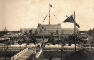
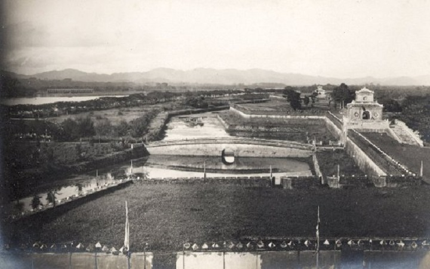
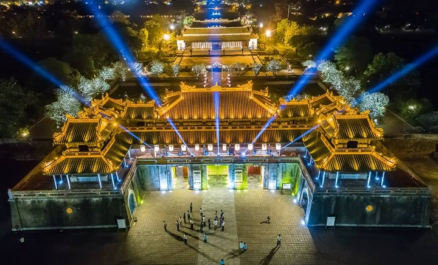
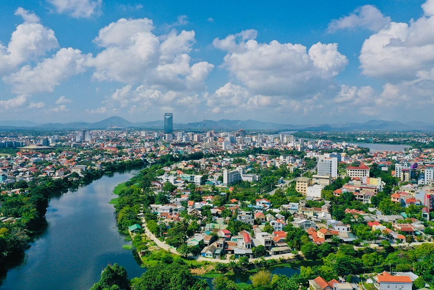

Lịch sử hình thành và phát triển thành phố Huế
Nằm ở vị trí trung tâm của đất nước và trong vùng kinh tế trọng điểm miền Trung, Huế đã được Trung ương xác định là đô thị loại I, là Thành phố di sản văn hóa thế giới, một trung tâm văn hóa, du lịch đặc sắc, là thành phố Festival của Việt Nam. Thành phố Huế là kinh đô phong kiến cuối cùng của Việt Nam, vốn có lịch sử và truyền thống văn hóa lâu đời với những giá trị và bản sắc độc đáo. Các giá trị di sản văn hóa nơi đây thể hiện những nét riêng hấp dẫn của một vùng văn hóa, vừa mang tính đặc thù - bản địa, vừa mang tính dân tộc - phổ biến, vừa tiếp thu có chọn lọc tinh hoa của các nền văn hóa Á Âu.
1. Quá trình hình thành vùng đất THUẬN HÓA - PHÚ XUÂN
Các sử liệu xưa cho biết rằng từ thời Hùng Vương vùng đất này thuộc bộ
Việt thường, một trong mười lăm bộ của nước Văn Lang. Dưới thời Bắc
thuộc nhà Hán thuộc đất của Nhật Nam, một trong ba quận của nước Âu
Lạc.

Từ thế kỷ. Sau chiến thắng Bạch Đằng của Ngô Quyền, biên giới Đại Việt
mở rộng dần về phía năm 192 sau CN vùng đất này thuộc địa bàn nước Lâm
Ấp và sau đó là vương quốc Champa kéo dài gần 12 Nam. Năm 1306, vua Trần
Anh Tông gả Huyền Trân Công chúa cho Chế Mân để đổi lấy hai châu Ô - Rí.
Năm sau vua Trần cho đổi thành châu Thuận, châu Hóa và đặt chức quan cai
trị. Thành Hóa châu (nằm cách Huế 9 km về phía hạ lưu sông Hương) là trị
sở và trung tâm chính trị kinh tế hành chính và quân sự của châu Hóa.
Sau hơn hai thế kỷ mở mang khai khẩn, đến giữa thế kỷ thứ XVI, lộ Thuận
Hóa đã thành nơi "đô hội lớn của một phương". Năm 1636 chúa Nguyễn Phúc
Lan dời phủ đến Kim Long là bước khởi đầu cho quá trình đô thị hóa trong
lịch sử hình thành và phát triển của thành phố Huế sau này. Hơn nửa thế
kỷ sau, năm 1687 chúa Nguyễn Phúc Thái lại dời phủ chính đến làng Thụy
Lôi, đổi là PHÚ XUÂN, ở vị trí tây nam trong kinh thành Huế hiện nay,
tiếp tục xây dựng và phát triển Phú Xuân thành một trung tâm đô thị phát
đạt của xứ Đàng Trong. Chỉ trừ một thời gian ngắn (1712-1738) phủ chúa
dời ra BÁC VỌNG, song khi Võ Vương lên ngôi lại cho dời phủ chính vào
Phú Xuân nhưng dựng ở "bên tả phủ cũ", tức góc đông nam Kinh thành Huế
hiện nay. Sự nguy nga bề thế của Đô thành Phú Xuân dưới thời chúa Nguyễn
Phúc Khoát đã được Lê Quý Đôn mô tả trong sách Phủ biên tạp lục năm
1776. Đó là một đô thị phát triển thịnh vượng trải dài hai bờ châu thổ
Sông Hương, từ Kim Long - Dương Xuân đến Bao Vinh - Thanh Hà. Tiếp đó,
Phú Xuân là kinh đô của nước Đại Việt thống nhất dưới triều Tây Sơn
(1788-1801) và là kinh đô của nước Việt Nam gần 1,5 thế kỷ dưới triều
đại phong kiến nhà Nguyễn (1802-1945).
2. Địa danh HUẾ chính thức được thay tên gọi PHÚ XUÂN từ khi nào?

Hiện chưa có nguồn thông tin nào khẳng định địa danh "Huế" chính thức
xuất hiện lúc nào, tuy nhiên có thể theo thông
- Ngày 20-10-1898, dụ của Vua Thành Thái lập thị xã Huế, ngày 30-8-1899
Toàn quyền Đông Dương ra Nghị định chuẩn y đạo dụ và ngày 12-12-1929
được nâng thành thành phố Huế (địa giới hành chính chỉ gồm 9 phường nằm
ngoài Kinh thành, từ phường đệ nhất đến phường đệ cửu, đến năm 1934 được
sắp xếp thành 11 phường).
- Sau Cách mạng Tháng Tám, thị xã Huế bao gồm cả khu vực nội ngoại
thành, là tỉnh lỵ của Thừa Thiên.
- Năm 1956, chính quyền Ngô Đình Diệm cải cách hành chính, Huế là thành
phố (về sau là thị xã) ngang cấp với tỉnh Thừa Thiên, nhưng tỉnh lỵ Thừa
Thiên vẫn đặt tại Huế.
- Sau năm 1975, Huế là thành phố, tỉnh lỵ của tỉnh Bình Trị Thiên (cũ)
gồm 18 phường và 22 xã, đến năm 1989, Thừa Thiên tách khỏi tỉnh Bình Trị
Thiên, Huế là thành phố tỉnh lỵ của Thừa Thiên Huế.
3. Thành phố Huế xây dựng và phát triển trong thời kỳ đổi mới

Từ năm 1990 đến 2010, thành phố Huế đã thực hiện nhiều lần chia tách các
phường, xã trực thuộc:
Ngày 29-9-1990, Hội đồng Bộ trưởng ra quyết định số 345/HĐBT về việc
điều chỉnh lại các địa giới hành chính của tỉnh Thừa Thiên Huế, theo đó
thành phố Huế có 18 phường, 5 xã. Ngày 29-7-1992, Huế được nâng cấp là
thành phố loại 2. Ngày 22-11-1995, Chính phủ ban hành Nghị định 80/CP.
Theo đó: Chia phường Vĩnh Lợi thành 2 phường là Phú Hội và Phú Nhuận;
chia phường Phú Hiệp thành 2 phường Phú Hiệp và Phú Hậu (thành phố Huế
gồm 20 phường, 5 xã).
Tháng 9-2005, Huế tiếp tục được nâng cấp thành đô thị loại 1 trực thuộc
tỉnh Thừa Thiên Huế. Đến ngày 27-3-2007, Chính phủ ban hành Nghị định
44/2007/NĐ-CP. Theo đó: chia xã Hương Sơ thành 2 phường là An Hòa và
Hương Sơ; chia xã Thủy An thành 2 phường An Đông và An Tây. Ngày
25-3-2010, chuyển 3 xã: Hương Long, Thủy Xuân, Thủy Biều thành 3 phường
có tên tương ứng. Đến đầu năm 2021, thành phố Huế có 27 phường: An Cựu,
An Đông, An Hòa, An Tây, Hương Long, Hương Sơ, Kim Long, Phú Bình, Phú
Cát, Phú Hậu, Phú Hiệp, Phú Hòa, Phú Hội, Phú Nhuận, Phú Thuận, Phước
Vĩnh, Phường Đúc, Tây Lộc, Thuận Hòa, Thuận Lộc, Thuận Thành, Thủy Biều,
Thủy Xuân, Trường An, Vĩnh Ninh, Vỹ Dạ, Xuân Phú.

Song, dù là Thủ phủ - Đô thành - Thị xã hay Thành phố, thì Huế vẫn luôn
luôn một TRUNG TÂM quan trọng về nhiều mặt. Ngày nay, sau Thủ đô Hà Nội
và Thành phố Hồ Chí Minh, Huế là một trung tâm chính trị, trung tâm văn
hóa du lịch, giáo dục và đào tạo, khoa học kỹ thuật quan trọng của đất
nước Việt Nam. Với độ dày về văn hóa, lịch sử của quá trình hình thành
và phát triển, thành phố Huế đã xác lập cho mình một bản sắc riêng, đó
là “bản sắc Huế” cùng với những giá trị văn hóa vật chất và tinh thần
của Huế đã tạo ra sức hấp dẫn, thu hút và thuyết phục sâu rộng đối với
trong nước và cả quốc tế. Ngày nay Huế là Thành phố Anh hùng, Thành phố
sở hữu 7 Di sản thế giới được UNESCO công nhận. Thành phố văn hóa ASEAN;
Thành phố bền vững về môi trường ASEAN, thành phố xanh quốc gia, thành
phố du lịch sạch ASEAN, thành phố Festival,… một trong những đô thị cấp
quốc gia.